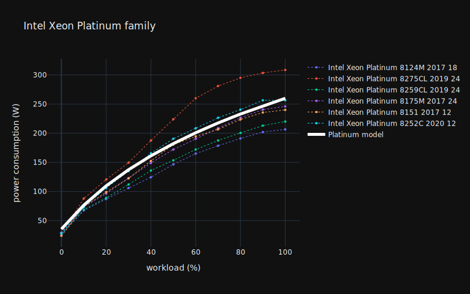
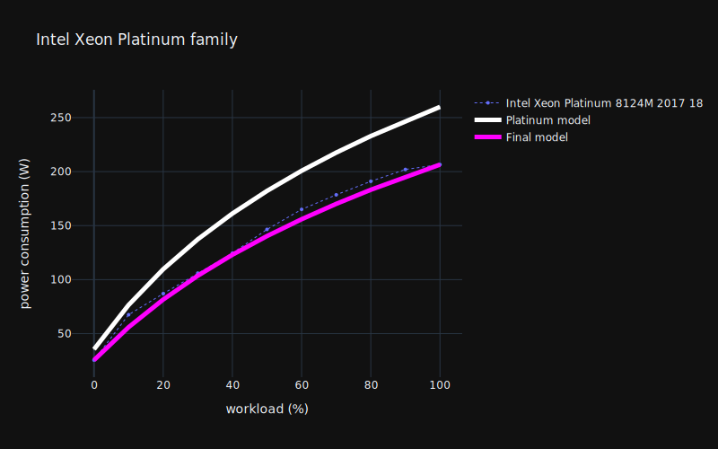

CPU
Characteristics
| Name | Unit | Default value (default;min;max) | Description | Example |
|---|---|---|---|---|
| units | None | 1;1;1 | CPU quantity | 2 |
| usage | None | See Usage | See usage | .. |
| core_units | None | 24;1;64 | Number of physical core on one CPU | 12 |
| die_size | mm2 | None | Size of the die | 1.1 |
| embedded | None | None | Name of the CPU embedded | AMD |
| die_size_per_core | mm2 | None | Size of the die divided by the number of core | 0.245 |
| model_range | None | None | Name of the cpu range or brand | i7 |
| family | None | None | Name of the architectural family (Generation) | Skylake |
| name | None | None | Complete commercial name of the CPU | Intel Core i7-1065 |
| tdp | Watt | None | Thermal Design Point | 250 |
Complete
The following completion strategies can be used
Completion from CPU name
If CPU name is given, model_range, tdp, die_size and family can be retrieved from a fuzzy matching on our cpu name repository.
Warning
Note that the cpu name repository is not complete and the completion can return a different cpu than the one given by the user. You can set a threshold for the fuzzy matching in the config file to control the behavior of the fuzzy matching. You can contribute to the cpu name repository by following the instructions in the documentation.
Completion of the die_size from family and/or core_units
if die_size_per_core and core_units are given :
Otherwise, if family is given, die_size can be retrieved from a fuzzy matching on our cpu repository.
If several cpu matches the given family, we use the core_units attributes :
- If
core_unitsmatches one to many cpu, the average value is given and min and max value are used asminandmaxfields. - If
core_unitsdoes not match any cpu, we infer thedie_sizewith a rule of three or a linear regression (when multiple cpus are available). - If
core_unitsis not provided, the average value is given and min and max value are used asminandmaxfields.
Embedded impacts
Impacts criteria
| Criteria | Implemented | Source |
|---|---|---|
| gwp | yes | Green Cloud Computing, 2021 |
| adp | yes | Green Cloud Computing, 2021 |
| pe | yes | Green Cloud Computing, 2021 |
| gwppb | no | |
| gwppf | no | |
| gwpplu | no | |
| ir | no | |
| lu | no | |
| odp | no | |
| pm | no | |
| pocp | no | |
| wu | no | |
| mips | no | |
| adpe | no | |
| adpf | no | |
| ap | no | |
| ctue | no | |
| ctuh_c | no | |
| ctuh_nc | no | |
| epf | no | |
| epm | no | |
| ept | no |
Impact factors
For one CPU the embedded impact is:
with:
| Constant | Units | Value |
|---|---|---|
| \(\text{CPU}_\text{embedded_die}^{\text{gwp}}\) | kgCO2eq/mm2 | 1.97e−02 |
| \(\text{CPU}_\text{embedded_die}^{\text{adp}}\) | kgSbeq/mm2 | 5.87e-09 |
| \(\text{CPU}_\text{embedded_die}^{\text{pe}}\) | MJ/mm2 | 0.265 |
| \(\text{CPU}_\text{embedded_base}^{\text{gwp}}\) | kgCO2eq | 9.14 |
| \(\text{CPU}_\text{embedded_base}^{\text{adp}}\) | kgSbeq | 2.04E-02 |
| \(\text{CPU}_\text{embedded_base}^{\text{pe}}\) | MJ | 156.00 |
Info
If there are more than 1 CPU we multiply \(\text{CPU}_\text{embedded}^\text{criteria}\) by the number of CPU given in units.
Usage impacts
Both power consumption and consumption profile are implemented.
Power Consumption profile
The CPU consumption profile is of the form:
Warning
We apply a log regression to fit data points \((workload, power)\) starting from a default consumption profile that can be found using the CPU model_range. This process can (in some cases) yield very low or negative power values due to wrong input data or model initialization. That is why there is a minimum power consumption limit set to 1W for any input workload.
Determining the parameters
From model range
If model_range is given or is completed from the cpu_name, we use the averaged parameter for the specific model range.
| manufacturer | model_range | a | b | c | d |
|---|---|---|---|---|---|
| Intel | Xeon Platinum | 171.1813 | 0.0354 | 36.8953 | -10.1336 |
| Intel | Xeon Gold | 35.5688 | 0.2438 | 9.6694 | -0.6087 |
| Intel | Xeon Silver | 20.7794 | 0.3043 | 8.4241 | 0.8613 |
| Intel | Xeon E5 | 48.9167 | 0.1349 | 15.7262 | -4.654 |
| Intel | Xeon E3 | 342.3624 | 0.0347 | 36.8952 | -16.4022 |
| Intel | Xeon E | 55.6501 | 0.0467 | 20.4146 | 4.24362 |
By default, we use the consumption profile of Intel Xeon Platinum

Model adaptation from punctual measurement
In case punctual power measurement (load;power_consumption) are given by a user, we adapt the selected consumption profile to match the given point.

Model adaptation from TDP
If the TDP is given we use the average power consumption per unit of TDP (given by TEADS) multiplied by the given TDP as power measurement and compute a model adaptation as describe above.
| 0% | 10% | 50% | 100% |
|---|---|---|---|
| 0.12 | 0.32 | 0.75 | 1.02 |
| Average power consumption per unit of TDP |